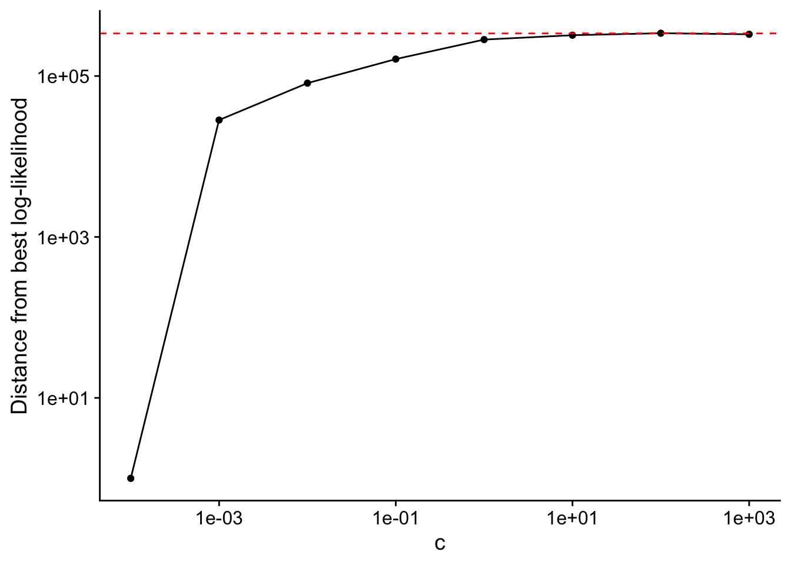
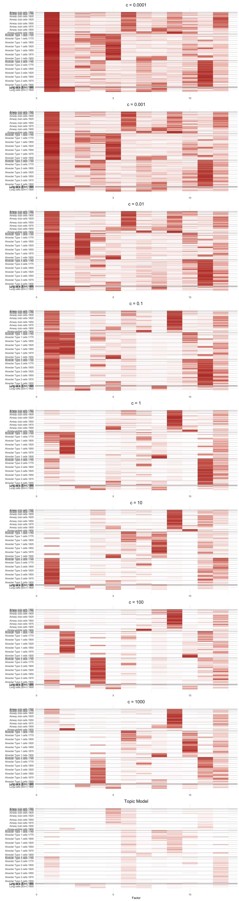
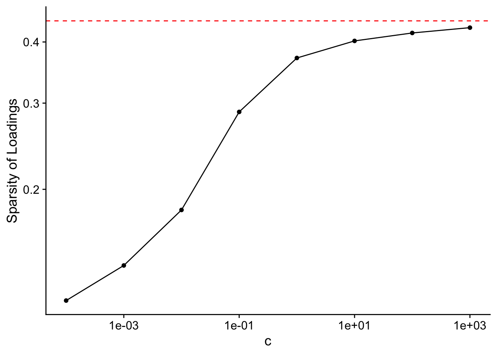
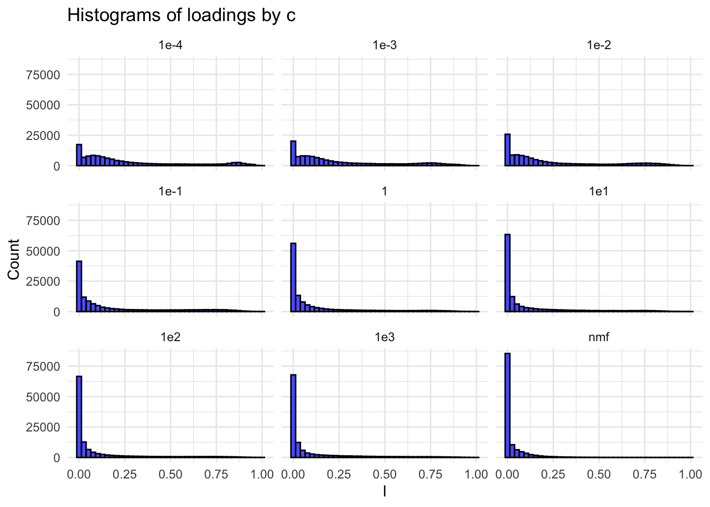
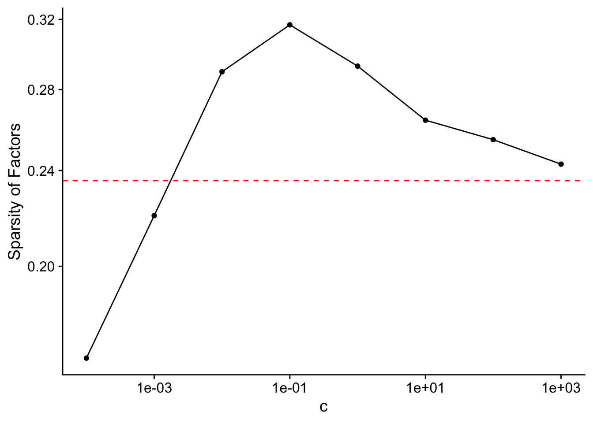
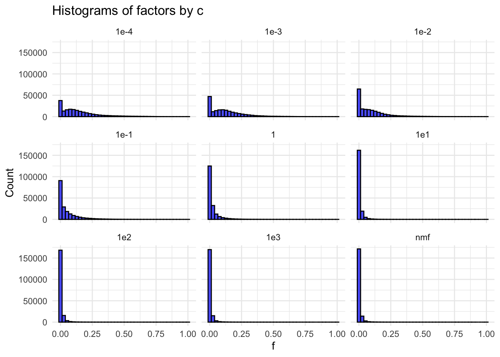

Last updated: 2024-11-16
Checks: 6 1
Knit directory: log1p_experiments/
This reproducible R Markdown analysis was created with workflowr (version 1.7.1). The Checks tab describes the reproducibility checks that were applied when the results were created. The Past versions tab lists the development history.
The R Markdown is untracked by Git. To know which version of the R
Markdown file created these results, you’ll want to first commit it to
the Git repo. If you’re still working on the analysis, you can ignore
this warning. When you’re finished, you can run
wflow_publish to commit the R Markdown file and build the
HTML.
Great job! The global environment was empty. Objects defined in the global environment can affect the analysis in your R Markdown file in unknown ways. For reproduciblity it’s best to always run the code in an empty environment.
The command set.seed(20240402) was run prior to running
the code in the R Markdown file. Setting a seed ensures that any results
that rely on randomness, e.g. subsampling or permutations, are
reproducible.
Great job! Recording the operating system, R version, and package versions is critical for reproducibility.
Nice! There were no cached chunks for this analysis, so you can be confident that you successfully produced the results during this run.
Great job! Using relative paths to the files within your workflowr project makes it easier to run your code on other machines.
Great! You are using Git for version control. Tracking code development and connecting the code version to the results is critical for reproducibility.
The results in this page were generated with repository version e278174. See the Past versions tab to see a history of the changes made to the R Markdown and HTML files.
Note that you need to be careful to ensure that all relevant files for
the analysis have been committed to Git prior to generating the results
(you can use wflow_publish or
wflow_git_commit). workflowr only checks the R Markdown
file, but you know if there are other scripts or data files that it
depends on. Below is the status of the Git repository when the results
were generated:
Ignored files:
Ignored: .Rhistory
Untracked files:
Untracked: analysis/mouse_lung.Rmd
Note that any generated files, e.g. HTML, png, CSS, etc., are not included in this status report because it is ok for generated content to have uncommitted changes.
There are no past versions. Publish this analysis with
wflow_publish() to start tracking its development.
Here, I will apply the log1p matrix factorization model
to a dataset of approximately \(10K\)
single cells labeled from the lung tissue of mouse embryos.
library(dplyr)
dat <- readr::read_rds("~/Documents/data/lung_and_airway.rds")
cells <- dat@meta.data
genes <- dat@assays$RNA@meta.features
counts <- Matrix::t(dat@assays$RNA@counts)
genes <- genes %>% dplyr::filter(feature_type == "protein_coding")
counts <- counts[, colnames(counts) %in% rownames(genes)]
day_str <- substr(cells$author_day, 2, 5)
day_str <- ifelse(day_str == "0000", "1900", day_str)
day <- as.numeric(day_str)
cells$day <- day
cells <- cells %>% dplyr::filter(day >= 1725)
cells <- cells %>% dplyr::filter(author_cell_type != "Lung progenitor cells")
set.seed(1)
df_list <- list()
i <- 1
for (d in unique(cells$author_day)) {
for (ct in unique(cells$author_cell_type)) {
ctd_df <- cells %>% dplyr::filter(author_day == d & author_cell_type == ct)
if (nrow(ctd_df) > 500) {
ctd_df <- ctd_df %>% dplyr::sample_n(500)
}
if (nrow(ctd_df) >= 25) {
df_list[[i]] <- ctd_df
i <- i + 1
}
}
}
dfo <- do.call(rbind, df_list)
counts <- counts[rownames(dfo), ]
counts <- counts[, Matrix::colSums(counts) > 0]
genes_to_use <- which(Matrix::colSums(counts>0)>4)
counts <- counts[,genes_to_use]
counts <- as(counts, "CsparseMatrix")
n <- nrow(counts)
p <- ncol(counts)
K <- 12
cc_vec <- c(0.0001, 1e-3, 1e-2, 1e-1, 1, 1e1, 1e2, 1e3)
rs <- Matrix::rowSums(counts)
s <- rs / mean(rs)I filtered out genes that are not expressed in at least \(5\) cells. This leaves \(10020\) cells and \(15874\) genes.
Now, we fit the log1p model for a variety of values of
\(c\). I initialize each model with a
rank 1 fit and then I fit a model with \(K =
25\) (where I do not fix the first factor).
nmf_k1 <- fastTopics:::fit_pnmf_rank1(counts)
nmf_LL <- nmf_k1$L %>%
cbind(
matrix(
data = rexp(
n = n * (K - 1), rate = 15
),
nrow = n,
ncol = K - 1
)
)
rownames(nmf_LL) <- rownames(counts)
nmf_FF <- nmf_k1$F %>%
cbind(
matrix(
data = rexp(
n = p * (K - 1), rate = 15
),
nrow = p,
ncol = K - 1
)
)
rownames(nmf_FF) <- colnames(counts)
set.seed(1)
nmf_fit0 <- fastTopics::init_poisson_nmf(
X = counts,
L = nmf_LL,
F = nmf_FF
)
nmf_fit <- fastTopics::fit_poisson_nmf(
X = counts,
fit0 = nmf_fit0
)
readr::write_rds(
nmf_fit, "~/Documents/data/passPCA/lung_embryo_results/nmf_k12.rds"
)
library(passPCA)
library(Matrix)
cc_vec <- c(0.0001, 1e-3, 1e-2, 1e-1, 1, 1e1, 1e2, 1e3)
rs <- Matrix::rowSums(counts)
s <- rs / mean(rs)
for (cc in cc_vec) {
print(cc)
set.seed(1)
log1p_k1 <- fit_factor_model_log1p_exact(
Y = counts,
K = 1,
maxiter = 10,
s = cc * s,
init_method = "frob_nmf"
)
init_LL <- log1p_k1$U %>%
cbind(
matrix(
data = rexp(
n = n * (K - 1), rate = 15
),
nrow = n,
ncol = K - 1
)
)
init_FF <- log1p_k1$V %>%
cbind(
matrix(
data = rexp(
n = p * (K - 1), rate = 15
),
nrow = p,
ncol = K - 1
)
)
set.seed(1)
fit <- fit_factor_model_log1p_exact(
Y = counts,
K = K,
init_U = init_LL,
init_V = init_FF,
maxiter = 100,
s = cc * s
)
rownames(fit$U) <- rownames(counts)
rownames(fit$V) <- colnames(counts)
readr::write_rds(
fit, glue::glue("~/Documents/data/passPCA/lung_embryo_results/log1p_c{cc}_k12.rds")
)
}
fit_list <- list()
fit_list[["nmf"]] <- readr::read_rds("~/Documents/data/passPCA/lung_embryo_results/nmf_k12.rds")
cc_vec <- c(0.0001, 1e-3, 1e-2, 1e-1, 1, 1e1, 1e2, 1e3)
for (cc in cc_vec) {
print(cc)
fit_list[[as.character(cc)]] <- readr::read_rds(
glue::glue("~/Documents/data/passPCA/lung_embryo_results/log1p_c{cc}_k12.rds")
)
}
readr::write_rds(
fit_list, glue::glue("~/Documents/data/passPCA/lung_embryo_results/k12_fit_list.rds")
)fit_list <- readr::read_rds(
"~/Documents/data/passPCA/lung_embryo_results/k12_fit_list.rds"
)Below is a plot of the log-likelihoods of the data under a Poisson
model using different values of \(c\).
The dashed red line is the log-likelihood of the topic model as fit via
fastTopics. Again, very small values of \(c\) actually lead to the highest likelihood
by far.
Y <- as.matrix(counts)
ll_vec <- c()
for (cc in cc_vec) {
fit <- fit_list[[as.character(cc)]]
B <- fit$U %*% t(fit$V)
Lambda <- cc * (exp(B) - 1)
Lambda <- as.matrix(Matrix::Diagonal(x = s) %*% Lambda)
ll <- sum(
dpois(
x = as.vector(Y),
lambda = as.vector(Lambda),
log = TRUE
)
)
ll_vec <- c(ll_vec, ll)
}
ll_nmf <- sum(
dpois(
x = as.vector(Y),
lambda = as.vector(fit_list$nmf$L %*% t(fit_list$nmf$F)),
log = TRUE
)
)
df <- data.frame(
cc = cc_vec,
ll_diff = max(ll_vec) - ll_vec + 1
)
rm(Y)library(ggplot2)
ggplot(data = df) +
geom_point(aes(x = cc, y = ll_diff)) +
geom_line(aes(x = cc, y = ll_diff)) +
xlab("c") +
ylab("Distance from best log-likelihood") +
scale_x_log10() +
scale_y_log10() +
geom_hline(yintercept = max(ll_vec) - ll_nmf + 1, color = "red", linetype = "dashed") +
cowplot::theme_cowplot()
normalize_bars <- function(LL) {
max_col <- apply(LL, 2, max)
sweep(LL, 2, max_col, FUN = "/")
}Each cell in the original dataset has a FACS label (one of 10 different cell types). Below, I plot the loadings stratified by each label.
library(tidyr)
library(stringi)
library(stringr)
cell.type <- as.factor(paste0(dfo$author_cell_type, sep = " ", dfo$day))
LL_c0001 <- normalize_bars(fit_list$`1e-04`$U)
# Downsample the number of cells and sort them using tSNE.
set.seed(8675309)
cell.idx <- numeric(0)
cell.types <- levels(cell.type)
for (i in 1:length(cell.types)) {
which.idx <- which(cell.type == cell.types[i])
# Downsample common cell types.
if (length(which.idx) > 2000) {
which.idx <- sample(which.idx, 2000)
}
# Don't include rare cell types.
if (length(which.idx) > 10) {
# Sort using tsne.
tsne.res <- Rtsne::Rtsne(
LL_c0001[which.idx, ],
dims = 1,
pca = FALSE,
normalize = FALSE,
perplexity = min(100, floor((length(which.idx) - 1) / 3) - 1),
theta = 0.1,
max_iter = 1000,
eta = 200,
check_duplicates = FALSE
)$Y[, 1]
which.idx <- which.idx[order(tsne.res)]
cell.idx <- c(cell.idx, which.idx)
}
}
cell.type <- cell.type[cell.idx]
cell.type <- droplevels(cell.type)
LL_c0001 <- LL_c0001[cell.idx, ]
LL_c001 <- normalize_bars(fit_list$`0.001`$U)
LL_c001 <- LL_c001[cell.idx, ]
LL_c01 <- normalize_bars(fit_list$`0.01`$U)
LL_c01 <- LL_c01[cell.idx, ]
LL_cp1 <- normalize_bars(fit_list$`0.1`$U)
LL_cp1 <- LL_cp1[cell.idx, ]
LL_c1 <- normalize_bars(fit_list$`1`$U)
LL_c1 <- LL_c1[cell.idx, ]
LL_c10 <- normalize_bars(fit_list$`10`$U)
LL_c10 <- LL_c10[cell.idx, ]
LL_c100 <- normalize_bars(fit_list$`100`$U)
LL_c100 <- LL_c100[cell.idx, ]
LL_c1000 <- normalize_bars(fit_list$`1000`$U)
LL_c1000 <- LL_c1000[cell.idx, ]
LL_cinf <- normalize_bars(fit_list$nmf$L)
LL_cinf <- LL_cinf[cell.idx, ]
make.heatmap.tib <- function(FF) {
tib <- as_tibble(scale(FF, center = FALSE, scale = apply(FF, 2, max))) %>%
mutate(Cell.type = cell.type) %>%
arrange(Cell.type) %>%
mutate(Cell.idx = row_number())
tib <- tib %>%
pivot_longer(
-c(Cell.idx, Cell.type),
names_to = "Factor",
values_to = "Loading",
values_drop_na = TRUE
) %>%
mutate(Factor = as.numeric(str_extract(Factor, "[0-9]+")))
return(tib)
}
LL_c0001_tib <- make.heatmap.tib(LL_c0001)
LL_c001_tib <- make.heatmap.tib(LL_c001)
LL_c01_tib <- make.heatmap.tib(LL_c01)
LL_cp1_tib <- make.heatmap.tib(LL_cp1)
LL_c1_tib <- make.heatmap.tib(LL_c1)
LL_c10_tib <- make.heatmap.tib(LL_c10)
LL_c100_tib <- make.heatmap.tib(LL_c100)
LL_c1000_tib <- make.heatmap.tib(LL_c1000)
LL_cinf_tib <- make.heatmap.tib(LL_cinf)
heatmap.tib <- LL_c0001_tib %>% mutate(Method = "c = 0.0001") %>%
bind_rows(LL_c001_tib %>% mutate(Method = "c = 0.001")) %>%
bind_rows(LL_c01_tib %>% mutate(Method = "c = 0.01")) %>%
bind_rows(LL_cp1_tib %>% mutate(Method = "c = 0.1")) %>%
bind_rows(LL_c1_tib %>% mutate(Method = "c = 1")) %>%
bind_rows(LL_c10_tib %>% mutate(Method = "c = 10")) %>%
bind_rows(LL_c100_tib %>% mutate(Method = "c = 100")) %>%
bind_rows(LL_c1000_tib %>% mutate(Method = "c = 1000")) %>%
bind_rows(LL_cinf_tib %>% mutate(Method = "Topic Model")) %>%
mutate(Method = factor(Method, levels = c("c = 0.0001", "c = 0.001", "c = 0.01", "c = 0.1", "c = 1", "c = 10", "c = 100", "c = 1000", "Topic Model")))
tib <- heatmap.tib %>%
group_by(Cell.type, Cell.idx) %>%
summarize()
cell_type_breaks <- c(1, which(tib$Cell.type[-1] != tib$Cell.type[-nrow(tib)]))
label_pos <- cell_type_breaks / 2 + c(cell_type_breaks[-1], nrow(tib)) / 2
library(ggplot2)
plt <- ggplot(heatmap.tib, aes(x = Factor, y = -Cell.idx, fill = Loading)) +
geom_tile() +
scale_fill_gradient(low = "white", high = "firebrick") +
labs(y = "") +
scale_y_continuous(breaks = -label_pos,
minor_breaks = NULL,
labels = levels(cell.type)) +
scale_x_continuous(breaks = seq(0, 30, 5)) +
theme_minimal() +
geom_hline(yintercept = -cell_type_breaks, size = 0.1) +
facet_wrap(~Method, ncol = 1, axes = "all") +
theme(legend.position = "none",
strip.text = element_text(size = 16))
plt
Now, I plot the sparsity of the loadings as a function of
c, where the dashed red line is the sparsity of the
loadings in the topic model.
L_sparsity_vec <- c()
for (cc in cc_vec) {
fit <- fit_list[[as.character(cc)]]
LL <- normalize_bars(fit$U)
L_sparsity <- mean(LL < 1e-5)
L_sparsity_vec <- c(L_sparsity_vec, L_sparsity)
}
nmf_sparsity <- mean(normalize_bars(fit_list$nmf$L) < 1e-5)
df <- data.frame(
cc = cc_vec,
l_sparsity = L_sparsity_vec
)
library(ggplot2)
ggplot(data = df) +
geom_point(aes(x = cc, y = l_sparsity)) +
geom_line(aes(x = cc, y = l_sparsity)) +
xlab("c") +
ylab("Sparsity of Loadings") +
scale_x_log10() +
scale_y_log10() +
geom_hline(yintercept = nmf_sparsity, color = "red", linetype = "dashed") +
cowplot::theme_cowplot() Here, we actually see that the relationship between the sparsity of the loadings and \(c\) is non-monotonic. I looks like the most sparse fit is for \(c = 10\), with \(c = 1\) a close second.
cc_out_vec <- c(
rep("1e-4", nrow(counts) * 12),
rep("1e-3", nrow(counts) * 12),
rep("1e-2", nrow(counts) * 12),
rep("1e-1", nrow(counts) * 12),
rep("1", nrow(counts) * 12),
rep("1e1", nrow(counts) * 12),
rep("1e2", nrow(counts) * 12),
rep("1e3", nrow(counts) * 12),
rep("nmf", nrow(counts) * 12)
)
cc_out_vector <- factor(
x = cc_out_vec,
levels = c("1e-4", "1e-3", "1e-2", "1e-1", "1", "1e1", "1e2", "1e3", "nmf")
)
l_df <- data.frame(
l = c(
as.vector(LL_c0001),
as.vector(LL_c001),
as.vector(LL_c01),
as.vector(LL_cp1),
as.vector(LL_c1),
as.vector(LL_c10),
as.vector(LL_c100),
as.vector(LL_c1000),
as.vector(LL_cinf)
),
cc = cc_out_vector
)ggplot(l_df, aes(x = l)) +
geom_histogram(bins = 40, fill = "blue", color = "black", alpha = 0.7) +
facet_wrap(~ cc) +
labs(title = "Histograms of loadings by c",
x = "l",
y = "Count") +
theme_minimal()
First, I plot the sparsity of the factors as a function of
c, where the dashed red line is the sparsity of the factors
in the topic model.
F_sparsity_vec <- c()
for (cc in cc_vec) {
fit <- fit_list[[as.character(cc)]]
FF <- normalize_bars(fit$V)
F_sparsity <- mean(FF < 1e-5)
F_sparsity_vec <- c(F_sparsity_vec, F_sparsity)
}
nmf_sparsity <- mean(normalize_bars(fit_list$nmf$F) < 1e-5)
df <- data.frame(
cc = cc_vec,
f_sparsity = F_sparsity_vec
)
library(ggplot2)
ggplot(data = df) +
geom_point(aes(x = cc, y = f_sparsity)) +
geom_line(aes(x = cc, y = f_sparsity)) +
xlab("c") +
ylab("Sparsity of Factors") +
scale_x_log10() +
scale_y_log10() +
geom_hline(yintercept = nmf_sparsity, color = "red", linetype = "dashed") +
cowplot::theme_cowplot()
Again, we see a non-monotonic relationship, with the sparsest loadings occuring when \(c = 0.1\).
I also plot the histogram of normalized factor values.
cc_out_vec <- c(
rep("1e-4", ncol(counts) * 12),
rep("1e-3", ncol(counts) * 12),
rep("1e-2", ncol(counts) * 12),
rep("1e-1", ncol(counts) * 12),
rep("1", ncol(counts) * 12),
rep("1e1", ncol(counts) * 12),
rep("1e2", ncol(counts) * 12),
rep("1e3", ncol(counts) * 12),
rep("nmf", ncol(counts) * 12)
)
cc_out_vector <- factor(
x = cc_out_vec,
levels = c("1e-4", "1e-3", "1e-2", "1e-1", "1", "1e1", "1e2", "1e3", "nmf")
)
f_df <- data.frame(
f = c(
as.vector(normalize_bars(fit_list$`1e-04`$V)),
as.vector(normalize_bars(fit_list$`0.001`$V)),
as.vector(normalize_bars(fit_list$`0.01`$V)),
as.vector(normalize_bars(fit_list$`0.1`$V)),
as.vector(normalize_bars(fit_list$`1`$V)),
as.vector(normalize_bars(fit_list$`10`$V)),
as.vector(normalize_bars(fit_list$`100`$V)),
as.vector(normalize_bars(fit_list$`1000`$V)),
as.vector(normalize_bars(fit_list$nmf$F))
),
cc = cc_out_vector
)ggplot(f_df, aes(x = f)) +
geom_histogram(bins = 40, fill = "blue", color = "black", alpha = 0.7) +
facet_wrap(~ cc) +
labs(title = "Histograms of factors by c",
x = "f",
y = "Count") +
theme_minimal()
sessionInfo()R version 4.4.0 (2024-04-24)
Platform: aarch64-apple-darwin20
Running under: macOS Ventura 13.5
Matrix products: default
BLAS: /Library/Frameworks/R.framework/Versions/4.4-arm64/Resources/lib/libRblas.0.dylib
LAPACK: /Library/Frameworks/R.framework/Versions/4.4-arm64/Resources/lib/libRlapack.dylib; LAPACK version 3.12.0
locale:
[1] en_US.UTF-8/en_US.UTF-8/en_US.UTF-8/C/en_US.UTF-8/en_US.UTF-8
time zone: America/New_York
tzcode source: internal
attached base packages:
[1] stats graphics grDevices utils datasets methods base
other attached packages:
[1] stringr_1.5.1 stringi_1.8.4 tidyr_1.3.1 ggplot2_3.5.1 dplyr_1.1.4
loaded via a namespace (and not attached):
[1] sass_0.4.9 utf8_1.2.4 generics_0.1.3 lattice_0.22-6
[5] hms_1.1.3 digest_0.6.36 magrittr_2.0.3 evaluate_0.24.0
[9] grid_4.4.0 fastmap_1.2.0 rprojroot_2.0.4 workflowr_1.7.1
[13] jsonlite_1.8.8 Matrix_1.7-0 promises_1.3.0 purrr_1.0.2
[17] fansi_1.0.6 scales_1.3.0 jquerylib_0.1.4 cli_3.6.3
[21] rlang_1.1.4 cowplot_1.1.3 munsell_0.5.1 withr_3.0.0
[25] cachem_1.1.0 yaml_2.3.8 Rtsne_0.17 tools_4.4.0
[29] tzdb_0.4.0 colorspace_2.1-0 httpuv_1.6.15 vctrs_0.6.5
[33] R6_2.5.1 lifecycle_1.0.4 git2r_0.33.0 fs_1.6.4
[37] pkgconfig_2.0.3 pillar_1.9.0 bslib_0.7.0 later_1.3.2
[41] gtable_0.3.5 glue_1.7.0 Rcpp_1.0.13 xfun_0.45
[45] tibble_3.2.1 tidyselect_1.2.1 highr_0.11 rstudioapi_0.16.0
[49] knitr_1.47 farver_2.1.2 htmltools_0.5.8.1 labeling_0.4.3
[53] rmarkdown_2.27 readr_2.1.5 compiler_4.4.0